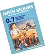

16 |
Mitwirkende |
 |
Episode 2: Strong Badia the Free Directed ByChuck Jordan Art Direction
Mai Nguyen Executive Producers
Dan Connors Director of DesignDave Grossman Director of ArtDavid Bogan Director of Production TechnologiesJonathan Sgro Designed By
Mark Darin Written By
Mike Stemmle Season Design ByMark Darin Programming
Charlie Smith Cartoon ShadingCarlo Morgantini Lead AnimatorAndy Welihozkiy Animation
Jed Heuer Lead Choreographers
Daniel Farjam Herrera Choreography
Eric Parsons Character ModelingMai Nguyen Environment Modeling
Mai Nguyen Technical Art and Effects
Jonathan Sgro Interface and Title DesignJake Rodkin Additional Art
Matt Chapman ProducerDave Felton Additional Production
Eric Eberhardt Testing
Will Armstrong Music
Matt Chapman Math Kickers MusicJonathan Howe Additional MusicJared Emerson-Johnson Sound DesignJared Emerson-Johnson Sound Implementation
Jared Emerson-Johnson Music Editing and MasteringJared Emerson-Johnson Voice Editing and Mastering
Bay Area Sound, Inc. Sound Recording and Engineering
Matt Chapman Marketing and Public Relations
Emily Morganti Web Developers
Doug Tabacco Web DesignJake Rodkin Web ProducerEric Eberhardt Console Manual
Emily Morganti ITDoug Tabacco Video Production ArtistNick Herman Build & Distribution EngineerJohn "Seg" Seggerson Product Support
Will Armstrong Finance
Greg Koll PublishingJames Lamorticelli LegalMark Barbolak InternKris Schneider CastStrong BadMatt Chapman Homestar RunnerMatt Chapman Strong SadMatt Chapman Strong MadMatt Chapman BubsMatt Chapman Coach ZMatt Chapman The CheatMatt Chapman The King of TownMatt Chapman HomsarMatt Chapman AnnouncerMatt Chapman MarzipanMissy Palmer Created with The Telltale Tool
Portions Copyright Firelight Technologies Manual LocalizationSDI Media Play Testing
Special Thanks
Jennifer Kloepping Telltale Pets
© 2008 Telltale, Inc. | All rights reserved |
|||||||||||
 |
 |